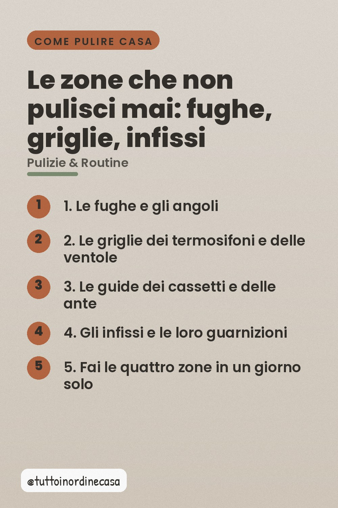
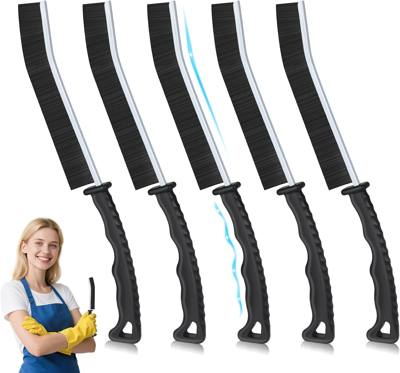

Il metodo delle quattro zone dimenticate e gli attrezzi che le sbloccano in mezz'ora, una volta al mese.

La routine da venti minuti tiene in ordine le superfici che vedi. Poi ci sono quattro zone che restano identiche per anni, perché sono scomode da raggiungere e non danno fastidio. Sono quelle che fanno sembrare una casa trascurata anche quando è pulita.
Le fughe fra piastrelle e mobili si sporcano in modo invisibile e si vedono solo da vicino o in controluce. Il punto chiave è la temperatura dell'acqua: tiepida, mai calda, perché il caldo fa evaporare il grasso prima che lo sportichino abbia sciolto il sporco.
È la zona più dimenticata in assoluto. La polvere si incastra nella lamella e poi esce a nugoli ogni volta che accendi. Un getto d'aria compressa dall'esterno verso l'interno le smonta in trenta secondi, e la polvere va a finire nel lavandino, non nell'aria della stanza.
Le guide scorrevoli raccolgono una pellicola di grasso invisibile che poi blocca i cassetti. Una bacinata di acqua calda con qualche goccia di detergente, un pennello, e in cinque minuti scorre tutto di nuovo. È l'operazione con il rapporto tra tempo e soddisfazione più alto di tutta la casa.
Le guarnizioni in gomma si seccano e diventano un canale per lo sporco. Una passata di acqua e aceto bianco, poi asciugate bene con un panno, le tiene elastiche e visibili. La parte difficile è la pazienza dell'asciugatura: bagnate e lasciate, diventano il posto peggiore della casa.
Non sparpagliarle nei mesi. Dedica un pomeriggio al mese a girare tutta la casa in ordine e a fare le quattro zone una dopo l'altra, cambiando attrezzo tra una e l'altra. Il tempo reale sono quaranta minuti, e per un mese non ci torni più.
